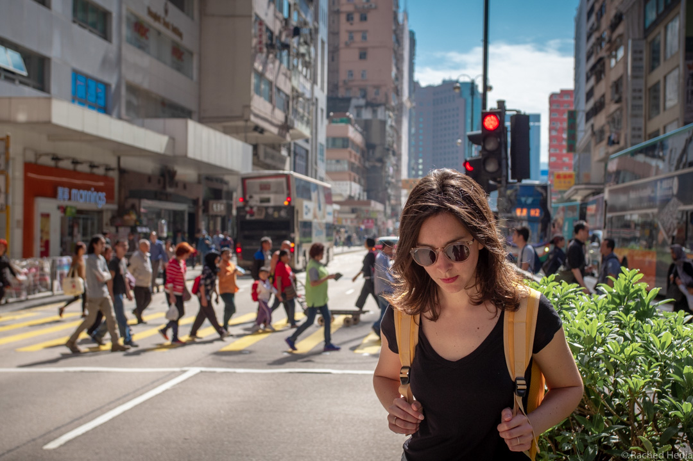

Après un mois passé en Chine, nous sommes tout excités à l’idée de découvrir Hong Kong. Sans y avoir jamais mis les pieds, cet endroit nous attire déjà.
Un peu d’histoire
Hong Kong signifie le “port aux parfums”. Ce nom vient du temps où Hong Kong exportait du bois d’agar (aussi appelé bois de oud). Aujourd’hui cette odeur d’encens ne se retrouve plus que dans les temples.
 Jusqu’au 19ème siècle, Hong Kong n’était qu’un petit village de pêcheurs.
Jusqu’au 19ème siècle, Hong Kong n’était qu’un petit village de pêcheurs.
En 1842, les britanniques signent le traité de Nankin qui contraint les chinois à céder l’île de Hong Kong à la Grande-Bretagne. Hong Kong devient alors une colonie britannique.
Le 1er juillet 1997, après un siècle et demi de colonisation, le Royaume-Uni retire sa souveraineté sur Hong Kong et rétrocède ainsi Hong Kong à la Chine.
Ces deux derniers sont tellement différents qu’il a bien fallu trouver un arrangement pour essayer de contenter tout le monde.
Hong Kong devient alors la première région administrative spéciale (RAS) de la République Populaire de Chine (la seconde étant Macao). Le principe énoncé est “un pays, deux systèmes”. C’est à dire que la ville de Hong Kong fonctionne sous une administration différente de celle du reste du pays.
 Du fait de son histoire, Hong Kong est donc devenue un mélange inédit d’Orient et d’Occident. Les langues officiellement parlées sont l’anglais et le chinois. Capitaliste face à une Chine communiste. Sa monnaie est le Hong Kong dollar et non le yuan. Et on y roule à gauche tandis qu’en Chine on roule à droite.
Du fait de son histoire, Hong Kong est donc devenue un mélange inédit d’Orient et d’Occident. Les langues officiellement parlées sont l’anglais et le chinois. Capitaliste face à une Chine communiste. Sa monnaie est le Hong Kong dollar et non le yuan. Et on y roule à gauche tandis qu’en Chine on roule à droite.
Après un mois en Chine, nous retrouvons le plaisir de surfer sur internet (Google le retour !), échanger en anglais sans aucune difficulté, boire un bon café, et manger tout ce qui nous plaît, des pâtisseries françaises à la cuisine japonaise. Comme un sentiment de liberté retrouvée !
Et un peu de géographie
Hong Kong plus qu’une ville est un territoire constitué d’un archipel de 262 îles. Hong Kong est l’île principale, en face la péninsule de Kowloon, et au nord de celle-ci les Nouveaux Territoires.
 La superficie totale est de 1 100 km2, soit autant que les villes de Berlin ou New York. Mais les trois quarts du territoire sont montagneux et donc difficilement constructibles… Les 7,5 millions d’habitants se partagent seulement 280 km2. On comprend mieux pourquoi Hong Kong est l’une des villes les plus densément peuplée au monde.
La superficie totale est de 1 100 km2, soit autant que les villes de Berlin ou New York. Mais les trois quarts du territoire sont montagneux et donc difficilement constructibles… Les 7,5 millions d’habitants se partagent seulement 280 km2. On comprend mieux pourquoi Hong Kong est l’une des villes les plus densément peuplée au monde.
Oh mais finalement on étouffe pas tant que ça à Paris !
Notre avis sur Hong Kong
Avec un nombre record de gratte-ciel, Hong Kong est la ville de la verticalité. Certains gratte-ciel ont même été construits à flanc de montagne. On se demande bien comment ces tours arrivent à tenir debout et à résister aux conditions climatiques parfois difficiles (la région est régulièrement affectée par des typhons).
Encerclé par ces géants de béton, on a l’impression de devenir poussière.
Ici l’animation ne se passe pas seulement dans les rues et sur les trottoirs. Il y a de la vie à tous les étages !
 Si vous voulez ressentir cette impression d’être comme dans un grand labyrinthe, allez vous promener dans le quartier de Central.
Si vous voulez ressentir cette impression d’être comme dans un grand labyrinthe, allez vous promener dans le quartier de Central.
 C’est finalement assez ludique d’emprunter un escalier, puis un escalator, traverser un building, en ressortir par une petite passerelle et atteindre un petit oasis avant de repartir à l’assaut de nouvelles tours.
C’est finalement assez ludique d’emprunter un escalier, puis un escalator, traverser un building, en ressortir par une petite passerelle et atteindre un petit oasis avant de repartir à l’assaut de nouvelles tours.
La première fois qu’on a découvert ce quartier, on était littéralement perdu. Mais une fois qu’on connaît quelques raccourcis et passages secrets, on se sent vite comme Mowgli dans la jungle.
Même si on veut bien croire les habitants qui nous disent qu’au bout d’un certain temps on s’y sent à l’étroit, nous n’avons jamais eu la sensation de manquer d’air durant notre séjour.
La baie n’est jamais très loin pour observer le va-et-vient des bateaux. La ville compte de nombreux rooftops pour prendre un peu de hauteur et aussi de jolis parcs bien arborés où il est agréable de venir se reposer. Et si ça ne suffit pas, on peut toujours opter pour une petite virée à la plage, à 30 minutes seulement en ferry.
 Pour nous qui aimons les grandes métropoles, Hong Kong ne nous a pas déçue. C’est une ville qui n’a pas son pareil. Je vous assure ! Vous voulez absolument un comparatif ? Bon ok…disons un genre de New York dans les montagnes.
Pour nous qui aimons les grandes métropoles, Hong Kong ne nous a pas déçue. C’est une ville qui n’a pas son pareil. Je vous assure ! Vous voulez absolument un comparatif ? Bon ok…disons un genre de New York dans les montagnes.
Hébergement : où loger pour une première visite à Hong Kong ?
 Pour le choix de notre hébergement, nous avons commis quelques petites erreurs qui nous ont values de changer 2 fois d’hébergement en 10 jours. Pas très reposant mais au moins cela nous a permis de découvrir différents quartiers de Hong Kong.
Pour le choix de notre hébergement, nous avons commis quelques petites erreurs qui nous ont values de changer 2 fois d’hébergement en 10 jours. Pas très reposant mais au moins cela nous a permis de découvrir différents quartiers de Hong Kong.
Voici donc quelques conseils simples qui j’espère vous aideront à faire le bon choix.
#1. Réserver bien en avance
C’est le conseil qu’on peut vite oublier quand on est en tour du monde et qu’on passe un temps conséquent à faire des réservations (hébergements, transports, activités).
Après un mois en Chine, où nous avions toujours réservé nos hébergements en dernière minute, nous nous sommes faits surprendre en arrivant à Hong Kong. Le prix des logements est très élevé (parmi les villes les plus chères au monde pour se loger) et la destination très touristique. Il était donc évident qu’en réservant quelques jours avant seulement, nous aurions du mal à trouver la perle rare.
Donc réservez bien en avance votre hébergement surtout si vous comptez rester plusieurs nuits, voir une semaine ou plus.
#2. Choisir le bon quartier
C’est toujours la même question quand on se rend dans une grande ville pour la première fois. Dans quel quartier loger ?
Tout est affaire de goût mais voici notre retour sur expérience.
- Tim Sha Tsui : situé au sud de l’île de Kowloon, quartier commerçant et animé, très bien desservi et à bonne distance de tous les sites d’intérêt. Donc un très bon point de chute pour visiter la ville.
- Adresse à Tim Sha Tsui : Hop Inn on Carnarvon, 33-35 Carnarvon Road, Tim Sha Tsui, Hong Kong
-
Mongkok : situé sur l’île de Kowloon, plus au nord, à deux pas des marchés. Tout aussi animé et commerçant que Tim Sha Tsui mais plus étouffant. C’est le quartier le plus densément peuplé de Hong Kong donc à éviter pour les agoraphobes.
- Aberdeen : situé tout au sud de l’île de Hong Kong et séparé des quartiers nord par les montagnes. Quartier assez isolé du reste de l’île, présente peu d’intérêt en dehors d’une courte promenade au port. Une seule ligne de métro et en bus un trafic important (on peut facilement perdre une heure pour rejoindre Central). Je ne vous recommande vraiment pas cet endroit pour une première visite à Hong Kong.
Autres quartiers agréables pour loger : Sheung Wan, Central, Wan Chai et Causeway Bay.
#3. Choisir un hébergement à côté d’une station de métro
Bien que la ville ne soit pas très étendue, la circulation est telle, qu’il est important de se trouver à deux pas d’une station de métro. Oui oui à deux pas, pas à trois ou quatre, c’est déjà trop loin !

Vous allez déjà beaucoup marcher pour visiter la ville, supporter le monde et la chaleur… Vous allez sans doute payer un peu plus cher. Mais ça vaut le coup de mettre la main au porte monnaie pour ne pas se trouver coincés dans les embouteillages en bus ou devoir marcher 20 minutes pour rejoindre la station de métro quand on a déjà marché pendant des heures toute la journée. Selon nous, ça peut vraiment changer la perception d’un séjour.
Donc notre dernier conseil, si vous le pouvez, logez le plus près possible d’une station de métro.
Transport
Pour arriver à Hong Kong, nous avons pris le train depuis Guilin en Chine, 3h15 seulement et 50€/pers (billets achetés sur Trip.com).
Sur place, tout est fait pour faciliter les déplacements dans cette fourmilière : ascenseurs, escalators, couloirs de métro bien plus larges que dans le métro parisien (et l’odeur d’urine en moins), ponts et passerelles, tramways à deux étages, ferries et bus.
En plus d’être efficace, le réseau de transport est bon marché.
Il peut être pratique d’acheter une carte Octopus, qui est un porte-monnaie électronique. Cette carte vous servira à payer les transports en commun (métro, bus, ferry) sans devoir faire l’appoint à chaque fois. De plus, cette carte offre des réductions sur les trajets. On peut aussi l’utiliser pour payer des petits montants dans certains magasins ou restaurants.
Si vous aimez les grandes villes, nul doute que Hong Kong vous plaira. En tout cas, nous on a adoré !
Si vous voulez quelques suggestions d’activités à faire sur place, allez voir notre top 10.
Mais si votre truc c’est plutôt la plage et le soleil, ne manquez pas notre prochain post sur les Philippines !